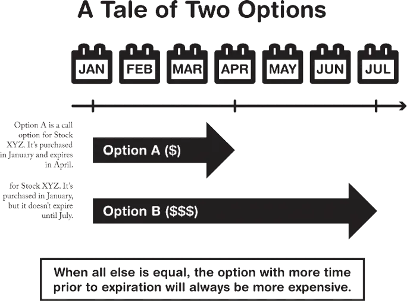
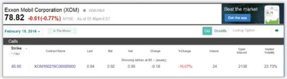
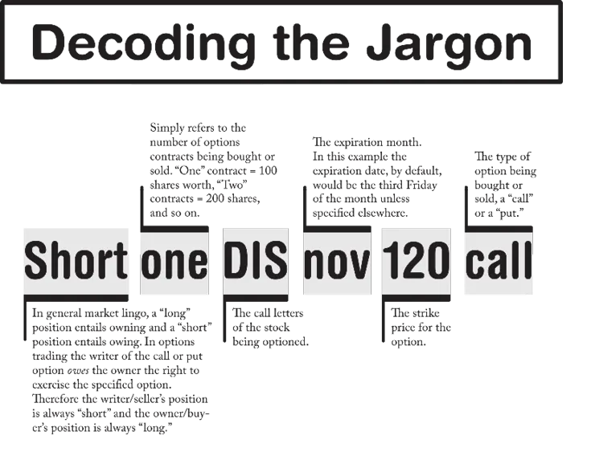

For the reader who is completely new to the world of options trading,
patience is indeed a virtue as you navigate the often confusing world of
stock options. Keep the faith that you will eventually gain an understanding
of how options work and of how the different types of options and the
different strategies come into play. This book makes it as easy as possible
for you.
Trading options may appear, at a glance, to be complicated, but it’s really
not so bad once you grasp some of the fundamental concepts and jargon
involved. You may have to reread certain passages of this book again and
again and may have to resort to some pencil-and-paper calculations to
figure it all out, but with some practice and a little “virtual” trading, you’ll
eventually be comfortable enough to give it a shot.
This chapter provides you with some proverbial nuts-and-bolts and
reviews the two main types of options trading: the put option and the call
option.
Perhaps the easiest type of option to understand is the call option. It’s
called a call because the buyer/owner may “call” for the sale of the stock at
any time prior to the expiration date. In the dress example from Chapter 1, I
purchased a “call” option on a designer dress and exercised the option by
“calling in” my right to make the purchase for $100, even though the same
dresses were selling on Etsy for $200.
The person who sells the call, also known as the writer of the call, agrees
to sell the stock (underlying asset) at the agreed-upon price at any point
before the expiration date.
Note : A quick word about expiration dates in options trading—the writer/seller of the call or put option always specifies an expiration date. Usually this is done just by stating the month, and it is assumed that the option will expire on the third Friday of the expiration month. For example, you can purchase an option contract in March with a May expiration. Unless otherwise specified, the contract will expire on the third Friday of May.
An investor would choose to buy a call when they believe that the
underlying asset will see an increase in price over a certain period of time.
Calls have an expiration date and, as such, the asset can be purchased at any
time prior to or on that date.
Expiration dates are important. In order for the buyer/owner of an option
to profit from it, the stock in question must perform in a certain way (it
must either go up or down) within a certain period of time. The longer the
time period before expiration, the greater chance, theoretically, that the
stock will perform in the desired way. Therefore—the most important
principle of options trading is—time is money. The more time exists in an
options contract between the point at which the option is secured and the
point at which the option expires, the more valuable the contract will be.
The idea of “time as money,” specifically in reference to options trading,
is emphasized thoroughly in Edward Olmstead’s book Options for the
Beginner and Beyond. Olmstead says that, “This phrase [time is money]
should always be in the back of your mind as you deal with options.2”

Note : Other traders and trading reference publications, such as Options Made Easy by Guy Cohen, have coined the term time value to refer to the added value of an option in light of how much time is left before the contract expires.
Note : It may also be prudent to note here that there are American-style options and European-style options. This book focuses on American-style options. The difference between the two is that American-style options may be exercised at any point prior to the expiration date, whereas European- style options must be exercised on the expiration date, if at all.
The opposite of a call option is a put option, and, like the call option, a put option has a buyer/owner and a seller/writer. A put option is so named because the owner has the right to “put” his stock back into the market at an agreed-upon price at any time within an agreed-upon time frame. The writer of a put option simply agrees to purchase said stock at the agreed-upon price at any time within the agreed-upon time frame. An investor would buy a put option if they were expecting the underlying asset to fall in price.
So there you have it, the basics of option trading. From these fundamental concepts come literally countless scenarios and opportunities for profitable trading. Let’s cultivate your understanding of the dynamics of options trading by going through a few specific examples of each type of trade.
Let’s say you’re about to buy a call option on Exxon Mobil™. Now, before you do so, it’s important to understand why you’ve decided to make this particular move. How much is Exxon Mobil selling for right now? At this very moment, let’s say Exxon is selling for $80. Ok, you think the stock is going to go up significantly in the next two months, so you’re going to purchase a call option for 100 shares of Exxon Mobile at a strike price (see Glossary) of $85, and you’re going to set your expiration month for March, two months away. This means that you’re buying the right to purchase 100 shares of the stock at $85 at any time between now (January) and the third week in March. The trader jargon for your call option position is: long one XOM Mar 85 call.
Note : Remember, expiration dates are assumed to be the 3rd Friday of the expiration month unless otherwise specified. Also, XOM are the call letters for Exxon Mobile. Don’t worry if you don’t understand all components of the jargon just yet. That will come in time.

So, if you’re brand new to options trading, then you may be wondering why you’re reserving the right to buy Exxon stock at a price ($85 per share) that’s more expensive than its current value of $80 per share. You’re doing this because you’re betting that Exxon is going to go up in value by the expiration date (third Friday in March). Let’s say you (or your broker) find a writer for this option who’s willing to sell it to you for $1 per share (all option contracts are quoted on a per share basis). Since you want a call option on 100 shares, you’re going to pay a total of $100 to own this option contract.
From here, there are many possible outcomes
Scenario 1: The third Friday of March arrives, and the stock still has yet to climb above $85. Your option is essentially worthless, and you’re out $100.
Scenario 2: It’s February and you’re midway through your contract. Exxon
Mobile has climbed to $90 and you call in your option to buy 100 shares
at $85. You’ve made $500 minus the $100 you paid to own the option—
$400 in total profit. Believe it or not, under these circumstances, calling
in your option is not likely to be the most profitable move.
Scenario 3: Again, it’s February and you’re midway through your contract.
Exxon Mobile has climbed to $90 and you decide to sell your option
contract to another party. Your option contract now has what’s commonly
referred to as an intrinsic value.
Note : The intrinsic value of the option is derived from the fact that the option guarantees the owner the right to purchase Exxon at $85 per share. Meanwhile, Exxon is selling for $90 per share on the open market. The call option thus has an intrinsic value of $5.
call option strike price — current stock price = intrinsic value
Since your option now has an intrinsic value, it’s is more valuable than it
was when you first purchased it (when Exxon stock was selling for $80).
With an intrinsic value of $5, the same option that you bought for $1 per
share is now likely to sell for $6 or $7 per share.
intrinsic value + time value = the price of a stock option
So, if you have an option contract worth $6 per share that you bought for
$1 a share and you sell it, how much profit do you make? The total cost for
optioning the 100 shares was $100. Now you’re selling at a total sale price
of $600. Your profit is an even $500. Compare this to the $400 in total
profit you’d have ended up with had you called in the stock per scenario 2.
Scenario 4: Let’s say, again, that it’s mid-February. Exxon hasn’t climbed in
value but instead hovered around the $80 mark. Perhaps some new factor
has led you to believe that it’s unlikely that the stock is going to climb
higher than $85 as you’d originally expected. You can always sell your
call option, as is, even though it has no intrinsic value and won’t be worth
as much as you paid for it now that half the contract time has passed.
Nonetheless, it is feasible that you could cut your losses some, perhaps by
finding a buyer who will purchase the call option for 50 cents per share.
You’d get $50 for your option contract after paying $100, and you’d take
a 50% loss.
Let’s take a look at a possible scenario in which you want to sell or write
a call option. When you write a call option you’re guaranteeing another
party the purchase of a particular stock at a particular price at particular
point in time. You’re not required to own the stock in order to write a call
option for that stock. This is known as naked call writing, and it’s quite
risky.
Let’s say that you own stock in Disney and you want to write a call
option contract for 100 shares of the stock. Since you own Disney stock,
this is known as covered call writing. Disney is currently trading at $110
per share. However, after years of holding the stock, you’re not very
optimistic about Disney’s acquisition of the YouTube content creation
company Makers Studio. On top of that you know their current CEO is
looking to retire by the end of the quarter, and you’re not thrilled about his
replacement prospects. You’re looking to lighten your load on Disney.
Selling/writing a call option for the stock can help you both get rid of
Disney and possibly make some extra money in the meantime.
It’s June and you write a call option with a $120 strike price and an
expiration month of November. The position is technically called: short one
DIS nov 120 call. DIS is the ticker symbol for Disney. Because you’re
giving the owner/buyer of the call option over four months Jun-Nov to wait
for the Disney stock to climb, your option may sell at a nice high price.
Let’s say you’re able to sell the option at $5 per share or $500 total. You
immediately receive the $500 but are obliged to sell 100 shares of Disney at
$120 per share at any time before the third Friday in November.

Scenario 1: The stock stays below $120 and, naturally, no one ever calls it
in. No one is going to voluntarily purchase 100 Disney shares at $120
when they could buy it for less. You’ve already made $500 by selling the
option and you’re free to write another call option if you’re still looking
to dump Disney in the most profitable way.
Scenario 2: It’s October, the trailer for the next Star Wars installment is
released, and it looks a whole lot better than anyone had anticipated.
Suddenly you’re not so sure that you want to get rid of your Disney stock.
The stock is trading at $122, two dollars above the strike price, and it
may be destined to go even higher. The call option you wrote already has
an intrinsic value of $2 and will probably sell for more than that, a lot
more considering that the option sold for $5 per share with no intrinsic
value at all. But then again, you also have to consider that there’s less
time left in the contract. It’s due to expire on the third Friday of
November. Let’s say that the call option that you sold can now be
rebought for $8 a share. Since it’s $3 more expensive per share than what
you sold it for originally, if you decide to buy it back (because you don’t
want to be forced to sell your Disney stock), it’s going to cost $800,
giving you a net loss of $300. But, if Disney keeps climbing, you’ll end
up better than you would have had you sold the stock at the end of the
call contract.
Scenario 3: Let’s say that you were right about the whole succession issue
with Disney. They’re not going to be able to assure their investors that
they’ve got the right leadership in place for the next generation. Two
months into the call contract, the price of Disney falls to $100 a share. It
doesn’t seem likely that the $120 call option that you sold is ever going to
be exercised, and, meanwhile, the value of that option has decreased
tremendously since the current price of the stock is lower and there’s only
half as much time left on the contract. At this point, if you want to, you
can buy back the call option for pennies on the dollar and turn a quick
profit. You should only do this, though, if you believe that there’s still a
chance that the stock may rebound back up to $120, at which point you
can either sell it again, or do nothing and just keep your stock.
There’s really no limit to the scenarios and possibilities. When dealing
with options, there are always a lot of options.
Remember, buying a put option is buying the right to put your shares
back on the market at a certain price—the strike price—within a given
period of time. Usually, put options are bought when the purchaser believes
that a stock he already owns is destined to decline in value, and he’s willing
to pay money to guarantee that he has the right to sell the stock at the strike
price for a certain period of time.
It’s April and you’ve got some GE stock worth $29 a share. You come
across some information that could be either good news or bad news for
GE, you’re not sure which. You don’t want to sell off your stock, but you
don’t want to lose your shirt, so you decide to buy a put option that
guarantees your right to unload 100 shares of GE at $30 per share. The
contract expiration month is June, so your position is named: Long one GE
Jun 30 put. The stock currently sells for $29 per share, but you bought the
put option at $3 per share, so the $1 per share you would have gained from
selling immediately (the intrinsic value) is offset by the price of the option.
In this example, we’re going to switch things up by envisioning the sale
of a put option within the context of a short sell. Short selling is when you
bet against the performance of a particular stock or group of stocks. The
practice of short selling garnered much attention in the aftermath of the
2008 financial crisis in the United States. Here’s how it works:
Let’s say McDonald’s is currently selling for $120 per share, but you
think that the fact that they started selling breakfast all day is ultimately
going to dip into their profit margins and the value of the stock will soon go
down. You’re betting against McDonald’s.
So you borrow – yes, borrow – 100 shares of McDonald’s. Your broker is going to charge you a hefty fee for this transaction, so be sure you know what you’re doing. When you borrow shares, what you are doing is temporarily controlling shares in a certain company with an agreement to return the stock at a certain time. So someone out there who owns 100 shares of McDonald’s stock has allowed you to take those 100 shares temporarily on the sole condition that you agree to return the 100 shares of McDonald’s to the original owner after, let’s say, two months.
Once you have the McDonald’s stock, you can, of course, do whatever you want with it. If you were to short the stock, then you would immediately sell it all at its current price of $120 per share. You would now have $12,000 in cash. If you were correct and McDonald’s takes a dip to, let’s say to $110 per share, then you would simply buy back the 100 shares of McDonald’s stock for $11,000 and you would then have the 100 shares of McDonald’s ready to return to the lender. You would have made $1,000 on your short sell minus any fees you paid to borrow the stock. Assuming you weren’t charged over $1,000, it was a profitable short sell.
Now, here’s where selling a put option may be a wise move. Let’s say that midway through your short selling of McDonald’s stock, they release a new breakfast item, a high protein McMuffin or some other gimmick that you think is going to be successful and ultimately prevent McDonald’s stock from dropping as low as you’d originally thought. Let’s say the stock is trading at $110, you still have some time before you have to return the 100 McDonald’s shares to lender, and because of this new item, you don’t think the stock is going to drop much lower. So you decide to sell a put option at $105, whereby you agree to buy 100 shares of McDonald’s stock at $105 per share by the time your contract expires, let’s say, by August. To put it into jargon your position is: short one Aug 105 put. Let’s say the put option sells for $6 per share. You immediately have $600 in cash just for selling the option, but you have the obligation to buy 100 shares of McDonald’s stock for $105 per share at a future date; these same 100 shares will eventually be returned to the party from whom you borrowed the stock. So if you’re wrong about the Protein McMuffin and it turns out to be a big flop and drives the price down to $95 a share, then you’re going to be forced to buy back your 100 shares at the above-market price of $105, because you sold the put option. Nonetheless, since, in this scenario, you originally shorted the stock at $120, you’ll still likely make a profit at the end of the day.
On the flip side, if you were correct and the Protein McMuffin stabilized the McDonald’s stock and it didn’t drop too far below $105, then you’ve made an extra $600 in profit by selling the put option. How? Simple, you still buy back 100 shares of McDonald’s at $105 (a total price of $10,500), which is $1,500 less than its value when you first borrowed and sold it ($12,000), plus you’ve got your $600 in profit for selling the put option, a total profit of $2,100 minus any brokerage and other fees paid for borrowing the stock and for selling the put option.
Ultimately, in the McDonald’s scenario, there is profitability in both of the considered outcomes, but only because it assumes that the short sell was successful. The only question became whether selling the put option would add to or detract from the profit gained on the assumedly successful short sell. As a player of the market, you should know that the short sell itself is incredibly risky, as once you sell off the shares after you borrow them, the price could skyrocket, forcing you to buy back the shares you borrowed with infinite loss potential. Be careful.
At this point you should have a basic grasp of the mechanics, terminologies, strategies, and risk factors involved in options trading. If you feel totally lost, then read through this chapter again before moving on. As Jimmy Cliff says, “You can get it if you really want.”